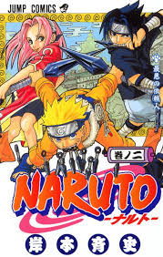
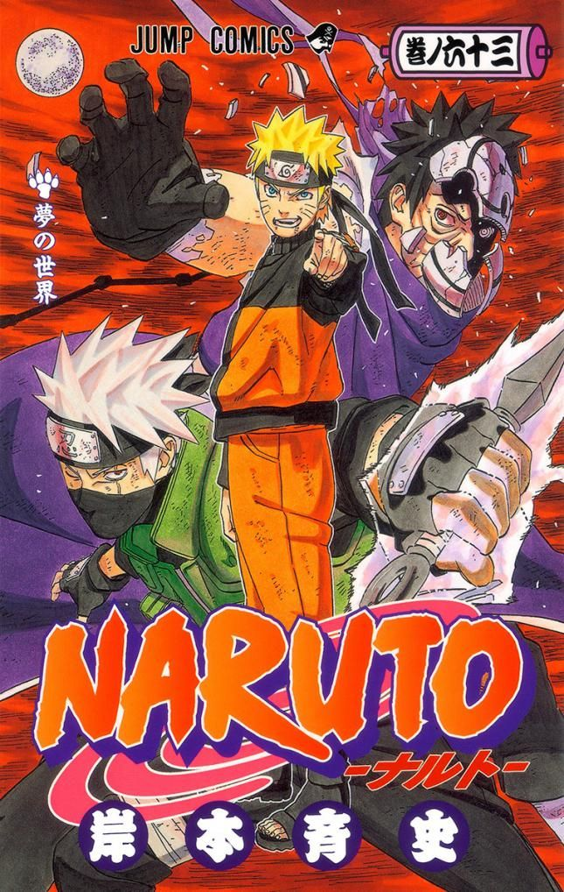
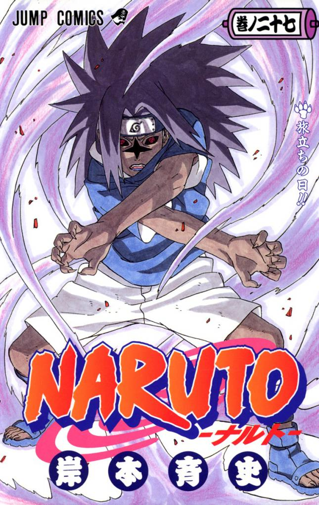
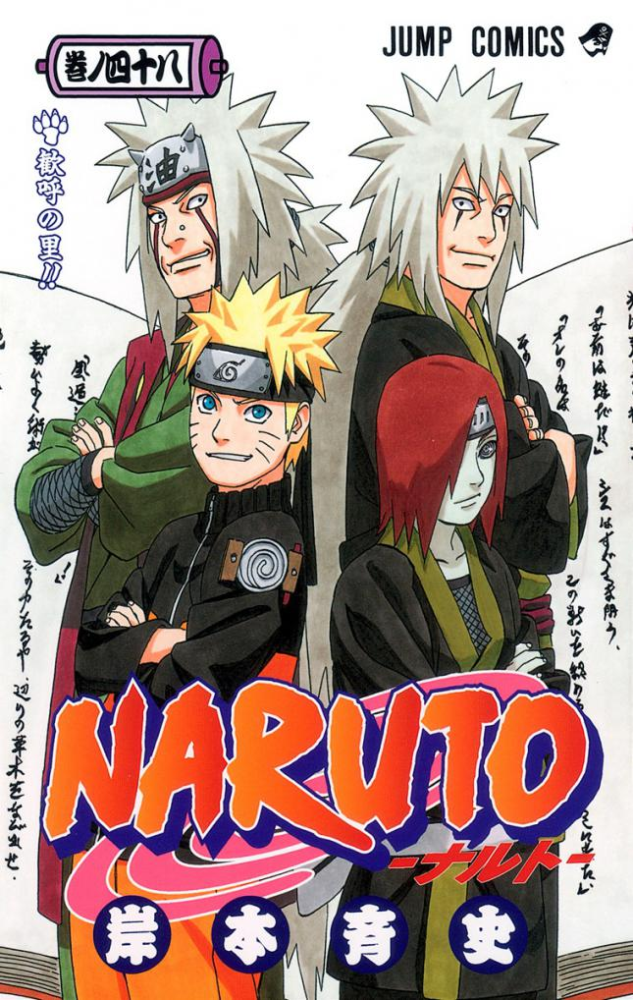
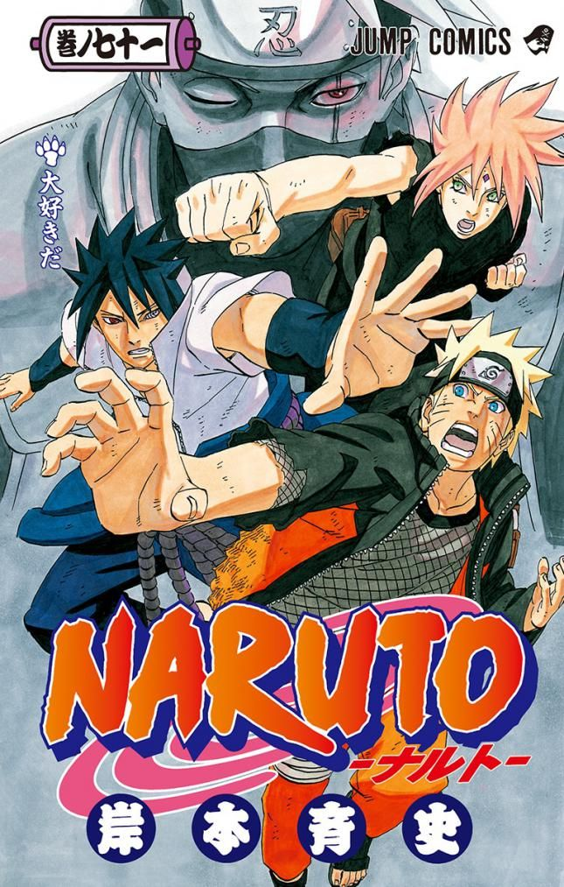
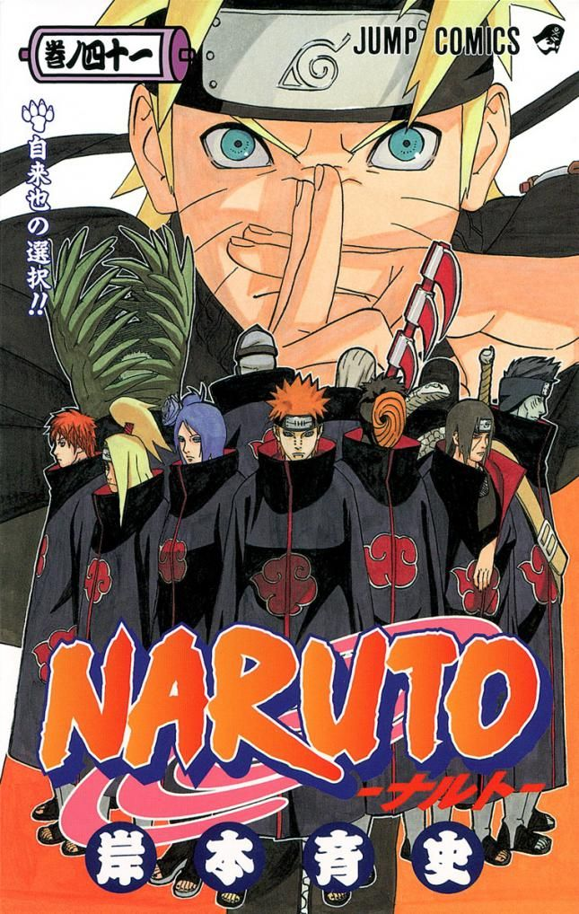
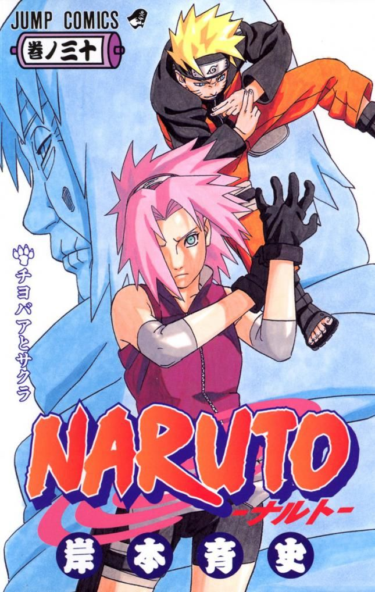

Mangak

2 liburukia
8-17 kapituluak
El Peor Cliente
04 / 03 / 2000
ISBN 978-4-08-873237-5
6,85 €

2 liburukia
8-17 kapituluak
El Peor Cliente
04 / 03 / 2000
ISBN 978-4-08-873237-5
6,85 €
26 liburukia
227-235 kapituluak
El Dia Del Adios
02 / 02 / 2005
ISBN 978-4-08-874315-8
5,5 €
70 liburukia
669-679 kapituluak
¡¡Naruto y el Sabio de los Seis Caminos...!!
04 / 08 / 2014
ISBN 978-4-08-880151-3
8,96 €

63 liburukia
598-607 kapituluak
Mundo de Ensueño
28 / 12 / 2012
ISBN 978-4-08-870550-7
8,42 €
63 liburukia
598-607 kapituluak
Mundo de Ensueño
28 / 12 / 2012
ISBN 978-4-08-870550-7
8,42 €

27 liburukia
236-244 kapituluak
El Dia De La Partida
04 / 04 / 2005
ISBN 978-4-08-874339-4
5,39 €
27 liburukia
236-244 kapituluak
El Dia De La Partida
04 / 04 / 2005
ISBN 978-4-08-874339-4
5,39 €

48 liburukia
443-453 kapituluak
La aldea alegre
04 / 11 / 2009
ISBN 978-4-08-874748-4
6,74 €
48 liburukia
443-453 kapituluak
La aldea alegre
04 / 11 / 2009
ISBN 978-4-08-874748-4
6,74 €

5 liburukia
37-45 kapituluak
Aspirantes
01 / 11 / 2000
ISBN 978-4-08-873335-5
5,51 €

71 liburukia
680-690 kapituluak
Me Agradan
04 / 11 / 2014
ISBN 978-4-08-880208-4
7,34 €
71 liburukia
680-690 kapituluak
Me Agradan
04 / 11 / 2014
ISBN 978-4-08-880208-4
7,34 €

41 liburukia
370-379 kapituluak
La elección de Jiraiya
04 / 02 / 2008
ISBN 978-4-08-874472-8
6,48 €
41 liburukia
370-379 kapituluak
La elección de Jiraiya
04 / 02 / 2008
ISBN 978-4-08-874472-8
6,48 €

30 liburukia
263-271 kapituluak
Chiyo-bā y Sakura
04 / 10 / 2005
ISBN 978-4-08-874423-0
4,79 €
30 liburukia
263-271 kapituluak
Chiyo-bā y Sakura
04 / 10 / 2005
ISBN 978-4-08-874423-0
4,79 €